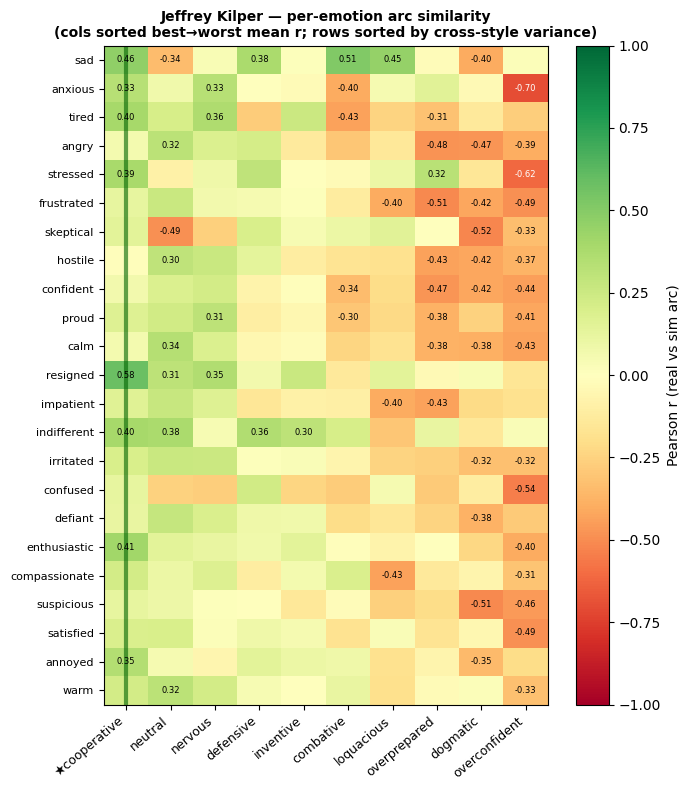
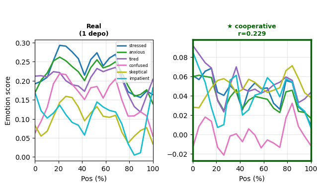
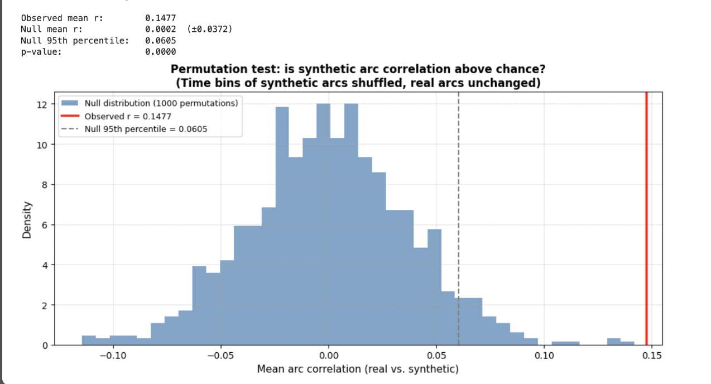
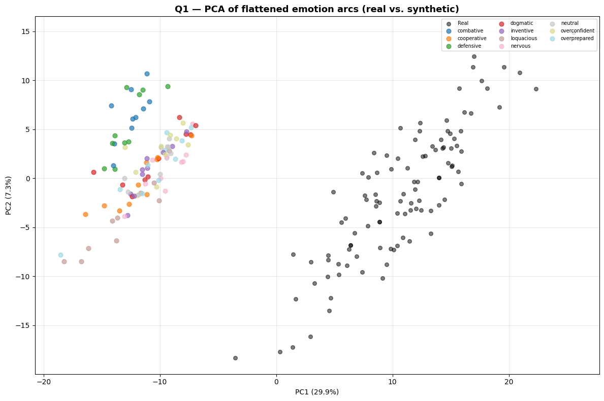
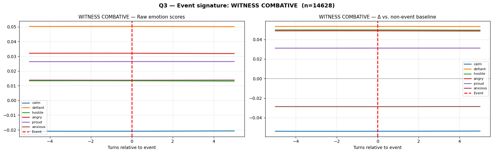
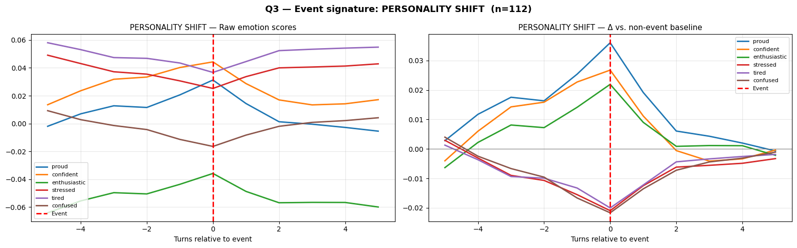

Depositions are a strategically critical phase of litigation, yet training attorneys to conduct them effectively is difficult to scale and evaluate. Central to that training is learning to read and manage how witnesses respond emotionally — becoming defensive, evasive, or combative — as adversarial pressure accumulates. We introduce Witness Sim, a generative deposition simulator, and evaluate its behavioral realism by comparing emotion trajectories between 55 real depositions and 100 synthetic ones.
Effective examiners probe consistency, manage resistance, and adapt as a witness becomes defensive, evasive, or fatigued. Existing legal-AI benchmarks measure none of this.
A simulator may answer case-specific questions correctly while still failing to reproduce the affective and interpersonal dynamics attorneys must learn to recognize and manage. We treat deposition simulation as a behavioral evaluation problem: a useful simulator must preserve case facts while also reproducing how witness behavior changes over time in response to questioning.
Do configurable witness personas produce distinguishable affective trajectories? Can emotion-vector trajectories provide a quantitative realism metric that distinguishes real from synthetic depositions?
An LLM generates surface dialogue, but each answer is conditioned on a low-dimensional 6D psychological state vector updated deterministically from the attorney's question.
The state vector s = (C, K, A, V, R, P) ∈ [0,1]⁶ encodes composure, knowledge, agreeableness, verbosity, rigidity, and performance. Each component evolves through a coupled ODE system: composure drains and recovers under pressure; agreeableness polarizes away from its midpoint; verbosity rises with sensitivity but collapses under leading questions.
Each witness is configured with one of ten behavioral archetypes — an attractor state toward which dynamics relax in the absence of pressure:
We adapt emotion-vector analysis from recent LM interpretability work (Sofroniew et al., 2026) to measure affective trajectory similarity between real and synthetic depositions.
For each of 23 target emotions, we generated 125 short narrative stories using
Claude-opus-4-5, prompted to evoke the emotion without naming it directly,
across 25 topically diverse scenarios (2,875 stories total). Each story was passed through
Llama-3.1-8B-Instruct and hidden states were extracted from layer 21.
After denoising by projecting out neutral-story variance, each emotion is a unit-norm
direction in the 4096-dimensional residual stream.
Deposition turns were encoded identically and cosine-projected onto all 23 emotion vectors, yielding a 23-dimensional emotion score per turn. Scores were normalized to 20 uniform positional bins to produce emotion arcs comparable across depositions of varying length.
This measurement is entirely external to Witness Sim's ODE state. It tests whether the behavioral trace produced by the simulator aligns with real affective dynamics — not whether the control variables are set correctly.
Best-fit archetypes vary across witnesses, and the best-fitting archetype shows a consistent advantage across the most discriminating emotions.
For each of the 10 synthetic archetypes, we computed the mean emotion arc across all witnesses and measured Pearson correlation with the mean arc of the 55 real depositions. The reported mean r = 0.148 is averaged across all emotion–style pairs.



Arc correlation is statistically reliable and unlikely to arise from chance temporal alignment — but the absolute effect size is modest, and the signal reflects direction rather than magnitude.
PCA of the 460-dimensional arc vectors reveals that real and synthetic transcripts occupy largely non-overlapping regions — and emotion magnitudes are compressed roughly 3× in synthetic transcripts.

The intensity gap reflects the limits of a low-dimensional state abstraction in capturing the full affective intensity of adversarial legal questioning. Witness Sim captures the direction of emotional dynamics — not their magnitude.
Exponential decay fitting to autocorrelation functions reveals a clean dissociation: state encodes slow dispositions, emotion fluctuates turn-to-turn.
The two distributions do not overlap (Mann-Whitney U = 138, p < 0.001). This dissociation motivates the residual analysis in Finding 4: by removing the slow state-aligned component from emotion scores, we can isolate the turn-level reactive signal.
Witness behavior is composed of both stable dispositions and transient reactions. Realistic simulated personas must capture both long-term behavioral consistency and short-term response to interpersonal stimuli.
Event-level classification with paired AUC reveals a clean asymmetry: the two feature sets capture complementary timescales.
Click to compare the two event types:
Witness Combative events show flat emotion trajectories across the ±5-turn window — before, during, and after. Combativeness is not a momentary escalation triggered by a specific question. It is a chronic interpersonal stance, carried entirely by slow state-aligned affect.

Personality Shift events produce a sharp spike in proud, confident, and enthusiastic scores precisely at turn 0, followed by rapid decay — a genuine turn-level transition rather than gradual drift. The residual space detects these moments better than raw features.

| Event | Base Rate | AUC (Emotion) | AUC (Residual) | Δ | p |
|---|---|---|---|---|---|
| Witness Combative | 21.4% | 0.996 | 0.707 | +0.289 | <0.001 |
| Personality Shift | 0.2% | 0.948 | 0.963 | −0.015 | <0.001 |
The sign of Δ flips between events — the two feature sets capture complementary timescales. Removing the slow state-aligned component degrades combative detection but improves personality-shift detection, confirming that emotion-vector analysis can distinguish who a witness is from when something meaningful is happening.
Effective deposition practice is not about memorizing case facts — it is about learning to recognize and manage how a witness behaves under sustained adversarial pressure. Defensiveness, evasion, fatigue, and combativeness are the skills attorneys must train against. A simulator that answers case questions correctly while failing to reproduce these dynamics is missing the core of what legal training requires.
We introduced an emotion-vector evaluation framework that makes this dimension measurable. Synthetic witnesses reproduce meaningful aspects of real deposition dynamics — emotion trajectories exhibit statistically significant temporal alignment and vary systematically across archetypes — while remaining distinguishable from real depositions and exhibiting substantially compressed emotional intensity.
This work reframes deposition realism as a dynamic behavioral problem. Our findings suggest that behavioral realism is both measurable and distinct from traditional notions of correctness — and that evaluating simulation fidelity requires asking not just what a witness says, but how they hold up over time.